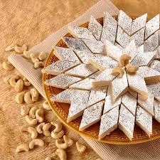

Sweet Dish Recipes From South Asia
On this page you will find different sweet dish recipes from the Indian and Bengali Cultures. What our specialty is, is that we are able to handle some of the spiciest
foods, and still love some of the sweetest dishes. Who doesn't love to have sweets, especially on festivals? While we can make some sweet dishes just cause,
many of the dishes are made in the Indian subcultures for various festivals.
Kheer

Kheer (In English known as Rice Pudding), is a universal dish across India and Bangladesh. Many cultures use it as offerings in their worship, but
it is also eaten on almost every occasion in both countries and cultures. From Weddings, to Janmashtami, to Eid, to Makar Sakranti, to Diwali, this dish can be
eaten on any occasion. It is also very easy to make, which will be shown in the recipe below.
| Total Time: | 35-40 Minutes |
|---|---|
| Prep Time: | 10-15 minutes |
| Cook Time: | 25-30 minutes |
Ingredients:
- 2 cups Coconut Milk(Optional)
- 2 Cups Milk
- 3 tablespoons white sugar
- 1/2 Cup Basmati Rice
- 1/4 Cup Raisins
- 1/2 Teaspoon Ground Cardamom
- 1/2 Teaspoon Rose Water(Optional)
- 1/4 Cup Toasted Sliced Almonds
- 1/4 Cup Chopped Pistachio Nuts
Steps:
- Gather all Ingredients
- Boil Milk and Sugar in Large SaucePan.
- Add Basmati Rice and Simmer Over Low Heat for 20 Minutes.
- Wait Until Mix is Thick and Rice is Tender
- Stir in raisins, Cardamom, and rose water and cook for another 5-10 minutes
- Let it cool a little bit, then pour into serving bowls.
- Garnish with Almonds and Pistachios
Kaju Katli
Kaju Katli, less commonly known as Barfi, is a sweet dish that is made widely across India. However, one of the most common occasions when families eat Kaju
Katli is on the occasion of Diwali. It is also eaten on many other occasions, like Kheer is as well. From Weddings to Eid to Makhar Sakranti, Raksha Bandhan, Teej, it is eaten across
all these holidays. It can be used as an offering or it can be eaten to be enjoyed by everyone. Below is an easily understandable recipe that can be used
to make Kaju Katli if someone wants one.
| Total Time: | 40 Minutes |
|---|---|
| Prep Time: | 10 Minutes |
| Cook Time: | 30 Minutes |
Ingredients:
- 1 and 1/2 Cup Powdered Cashews
- 1/2 Cup Water
- 1 and 1/2 tablespoon Ghee
- 1 cup sugar
- 1 teaspoon Green Cardamom
Steps:
- Gather All Ingredients
- Grind Cashews into A Powder, Sieve it to dilute any oil that may be released.
- Add Sugar and Water into A pan Over Medium Flame and Stir till Sugar Dissolves
- Add Cashewnut Powder when Blend starts boiling and stir until mix is smooth and slightly thick.
- Once Thick Enough, take pan off stove and keep aside.
- After cooled, move mix to bowl and knead till dough is smooth and fine and crackfree.
- Once Dough is Crack Free, use a rolling pin to flatten it and then set it aside for some time.
- Once the dough is set, cut the dough into diamond shapes.
For Even More Recipes:
https://www.tarladalal.com/Besan-Barfi-Quick-Besan-Barfi-with-Ghee-42128r
https://www.allrecipes.com/